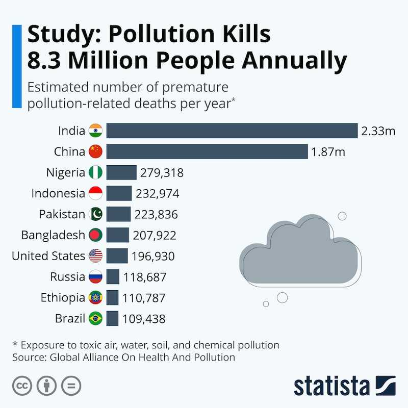

.png)
- Los procesos vitales de interacción, adaptación y supervivencia en un ambiente determinado
- El flujo de la materia y la energía en el marco de una comunidad biótica determinada
- El desarrollo y sucesión de los distintos ecosistemas que existen
- La diversidad, abundancia y distribución de los organismos vivientes en los diversos medios ambientales
Inicialmente, se pensó la ecología como una ciencia preocupada por las relaciones entre los seres vivientes y sus respectivos entornos y entre sí, pero dicha definición se amplió para abarcar justamente el estudio del medio ambiente  Eso implica también los transportes de energía y materia, la transformación de las mismas por parte de las comunidades biológicas, y todo lo que sea necesario para entender en su necesaria complejidad y vastedad
Uno de los conceptos más importantes en los últimos tiempos de la aplicación de la ecología a la planificación industrial y urbana, es la huella ecológica. Éste puede entenderse como la representación concreta del impacto medioambiental que puede generar una actividad, operación, producto u obra, considerando los elementos específicos de su emplazamiento, sus características y sus consecuencias
La ecología es una de las ramas de la biología que más aplicaciones prácticas presenta. Entre ellas se encuentran la conservación y el ambientalismo, el manejo de recursos naturales y de humedales, la planificación urbana, la salud comunitaria, la economía, la interacción social humana y otras ciencias básicas aplicadas.
Pricipales problemas de la Ecología y sus aplicaciones
| Problema | Aplicaciones | Área a la que pertenece |
|---|---|---|
| Energías renovables | Producción de residuos, contaminación directa, nuevas adaptaciones | Autoecología |
| Crecimiento poblacional | Construcción de carreteras, incisiones en los ecosistemas, producción de residuos, generación de contaminantes | Ecología de población |
“Los hombres no se les permite pensar libremente acerca de la química y la biología: ¿por qué se les permita pensar libremente acerca de la filosofía política?”
-Auguste Comte
“La ciencia ha realizado enormes progresos en la comprensión de los engranajes químicos de la vida, pero la precisión y complejidad a nivel molecular de los sistemas biológicos ha paralizado los intentos de explicar sus orígenes”
-Michael Behe